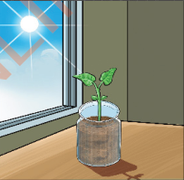
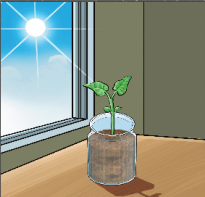

| Day | Seedling in container A | |||||
|---|---|---|---|---|---|---|
| Height (cm) | Stem strength | Leaf colour | Seedling in container B | |||
| Height (cm) | Stem strength | Leaf colour | ||||
| 1 | ||||||
| 4 | ||||||
| 8 | ||||||
| 12 | ||||||
| 13 | ||||||
| 14 | ||||||
Conclusion:
Experiment 4: Investigation on the importance of water in plant growth
Aim:To determine the importance of water in plant growth.
Materials:Two (2) seedlings of the same type and size planted in 2 containers labelled A and B, water, sunlight, a ruler and a notebook
Procedure
- 1.Place a seedling in container A in a spot with sunlight and water it daily.
- 2.Place a seedling in container B in a spot with sunlight and do not water.


Figure 5: An experiment to investigate the importance of water in plant growth
- 3.Observe for two weeks, measuring height every 2–3 days and noting leaf colour, soil moisture, and plant strength.Record the observation in a table.